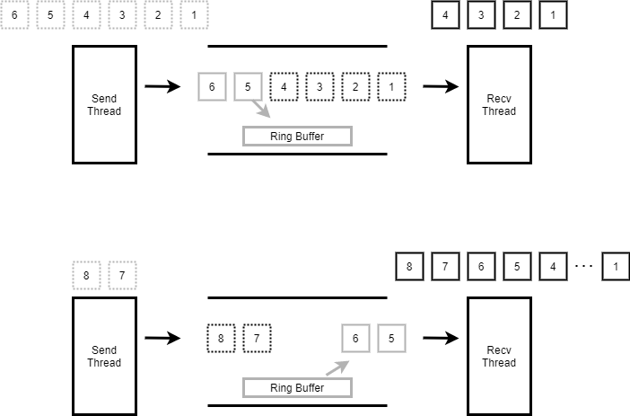

数据同步-管道¶
原理简介¶
Zephyr的Pipe用于线程向线程发送字节流，不能用于ISR。一个pipe只能做到单工或是半双工。Zephyr在设计上虽然支持对同一pipe进行同时多线程发和多线程收，但一般情况下都只建议做一发一收。
Ring buffer工作原理¶
Zephyr允许定义任意数量的管道，最大数量只由可用内存的量决定。管道的尺寸由管道的ring-buffer大小决定，管道内也可以不带ring-buffer。 线程发送数据到管道时，如果数据没有被其它线程接收完，剩余的数据会被放入到管道内的ring-buffer。线程接收数据时会先从ring buffer内读取，再从pipe内等待发送的线程接收数据。 如下图示，第一次发送数据16,接收线程只收14，剩余5，6会被放入ring buffer。下一次接收时会先从ring buffer中读出 5，6.再接收发送线程发送的7,8。

``收发行为¶
发送时会指定发送到pipe数据的尺寸，和允许最小传送尺寸。如果实际传送尺寸小于最小传送尺寸，且不等待传送，将立即返回失败。 接收时会指定从pipe接收数据的尺寸，和允许最小接收尺寸。如果实际接收的尺寸小于最小接收尺寸，且不等待接收，将立即返回失败。 从pipe收发数据，只要实际收发数据的尺寸大于指定最小收发尺寸，本次收发都是成功的。 接收和发送都允许等待，收发数据没有达到指定的尺寸前会保持阻塞，如果超时后实际收发数据的尺寸小于指定的最小尺寸，将返回失败。 如果实际接收和发送数据的尺寸已经满足指定的最小尺寸，将记录退出，不会保持阻塞等待收发所有指定数据。
使用¶
API¶
#define K_PIPE_DEFINE(name, pipe_buffer_size, pipe_align)
作用:定义一个k_pipe，为其分配ring buffer
name: k_pipe name
pipe_buffer_size: pipe内ring buffer的大小
pipe_align: 定义静态数组座位ring buffer，该参数指定该数组的对齐大小，只能是2的幂
void k_pipe_init(struct k_pipe *pipe, unsigned char *buffer, size_t size)
作用:初始化k_pipe, 并为其指定ring buffer
pipe: 要初始化的pipe
buffer: ringbuffer地址
size: ring buffer大小
int k_pipe_alloc_init(struct k_pipe *pipe, size_t size)
作用:初始化k_pipe, 并为其分配ring buffer
pipe: 要初始化的pipe
size: 分配ring buffer大小
返回值：0表示成功，-ENOMEM表示memory不足
int k_pipe_cleanup(struct k_pipe *pipe)
作用:释放k_pipe_alloc_init分配的ring buffer pipe: 要释放buffer的pipe
返回值：0表示成功，-EAGAIN表示目前正在使用无法释放
int k_pipe_put(struct k_pipe *pipe, void *data, size_t bytes_to_write, size_t *bytes_written, size_t min_xfer, k_timeout_t timeout)
作用:发送数据到pipe
pipe: 管道
data: 发送数据的地址
bytes_to_write：发送数据的尺寸
bytes_written： 实际发送的尺寸
min_xfer： 最小发送尺寸
timeout：等待时间，单位ms。K_NO_WAIT不等待, K_FOREVER一直等
返回值：0表示成功，-EINVAL表示参数错误，-EIO表示未等待且未传送任何数据，-EAGAIN表示传送的数据单数据量小于min_xfer
int k_pipe_get(struct k_pipe *pipe, void *data, size_t bytes_to_read, size_t *bytes_read, size_t min_xfer, k_timeout_t timeout)
作用:从pipe接收数据
pipe: 管道
data: 发送数据的地址
bytes_to_read: 接收数据的尺寸 bytes_read 实际接收的尺寸 min_xfer 最小接收尺寸
timeout：等待时间，单位ms。K_NO_WAIT不等待, K_FOREVER一直等
返回值：0表示成功，-EINVAL表示参数错误，-EIO表示未等待且未收到任何数据，-EAGAIN表示接收的数据单数据量小于min_xfer
size_t k_pipe_read_avail(struct k_pipe *pipe)
作用:获取pipe内有多少有效数据，也就是ring buffer的有效数据大小
pipe: 管道 返回值：可读数据大小
size_t k_pipe_write_avail(struct k_pipe *pipe)
作用:获取可以向管道写多少数据，也就是ring buffer内的空闲空间大小
pipe: 管道 返回值：可写数据大小
使用说明¶
初始化¶
先定义初始化一个pipe，一共有三种方式 使用宏，宏会定义一个数组作为pipe的ring buffer
K_PIPE_DEFINE(my_pipe, 100, 4);
使用函数初始化，需要自己定义一个数组作为ring buffer
unsigned char __aligned(4) my_ring_buffer[100];
struct k_pipe my_pipe;
k_pipe_init(&my_pipe, my_ring_buffer, sizeof(my_ring_buffer));
使用函数初始化，由pipe自己分配内存作为ring buffer
struct k_pipe my_pipe;
k_pipe_alloc_init(&my_pipe, 100)
用k_pipe_alloc_init初始化的pipe，不再使用时需要用k_pipe_cleanup释放其分配的ring buffer
k_pipe_cleanup(&my_pipe)
写pipe¶
发送数据需要分三种情况处理，如下分析
struct message_header {
...
};
void producer_thread(void)
{
unsigned char *data;
size_t total_size;
size_t bytes_written;
int rc;
...
while (1) {
/* 准备要发送到pipe的数据，尺寸大于struct message_header */
data = ...;
total_size = ...;
/* 通过pipe发送数据 */
rc = k_pipe_put(&my_pipe, data, total_size, &bytes_written,
sizeof(struct message_header), K_NO_WAIT);
if (rc < 0) {
//数据头没有发送完，发送失败处理
...
} else if (bytes_written < total_size) {
//数据头发送完，但数据没全发送，进行处理（例如继续发送）
...
} else {
//所有数据都发送完毕
...
}
}
}
读pipe¶
接收数据也分三种情况处理，如下分析
void consumer_thread(void)
{
unsigned char buffer[120];
size_t bytes_read;
struct message_header *header = (struct message_header *)buffer;
while (1) {
rc = k_pipe_get(&my_pipe, buffer, sizeof(buffer), &bytes_read,
sizeof(header), K_MSEC(100));
if ((rc < 0) || (bytes_read < sizeof (header))) {
//数据头未收全，接收失败处理
...
} else if (header->num_data_bytes + sizeof(header) > bytes_read) {
//数据头收完，但数据没收全，进行处理（例如跳到下一次接收）
...
} else {
//所有数据接收完毕
...
}
}
}
实现¶
该小节通过对管道内核代码的分析，理解Zephyr是如何实现以上描述的功能特性. pipe的实现代码在kernel:raw-latex:pipes.c中
pipe结构体¶
一个管道主要是由ring buffer和两个wait_q组成，ring buffer最为pipe buffer， 两个wait_q用于管理发送和接收线程，如下定义：
struct k_pipe {
//下面5个字段是ring buffer管理用，使用的是常规管理方法，本文不做分析
unsigned char *buffer;
size_t size;
size_t bytes_used;
size_t read_index;
size_t write_index;
//同步锁
struct k_spinlock lock;
//两个wait_q，readers用于管理读pipe的线程，writers用于管理写pipe的线程
struct {
_wait_q_t readers; /**< Reader wait queue */
_wait_q_t writers; /**< Writer wait queue */
} wait_q; /** Wait queue */
//pipe flag，如果pipe的ring buffer是pipe分配的，该flag之为K_PIPE_FLAG_ALLOC
uint8_t flags; /**< Flags */
};
初始化¶
k_pipe_init和K_PIPE_DEFINE主要就是初始化ring buffer和两个wait_q,流程简单，查看代码即可。 这里看一下k_pipe_alloc_init和k_pipe_cleanup的流程 k_pipe_alloc_init->z_vrfy_k_pipe_alloc_init->z_impl_k_pipe_alloc_init
int z_impl_k_pipe_alloc_init(struct k_pipe *pipe, size_t size)
{
void *buffer;
int ret;
if (size != 0U) {
/从线程resource_pool内分配内存作为ring buffer
buffer = z_thread_malloc(size);
if (buffer != NULL) {
//初始化pipe
k_pipe_init(pipe, buffer, size);
//标记该pipe用的ring buffer是自己分配的内存
pipe->flags = K_PIPE_FLAG_ALLOC;
ret = 0;
} else {
ret = -ENOMEM;
}
} else {
//不需要ring buffer，直接进行初始化
k_pipe_init(pipe, NULL, 0);
ret = 0;
}
return ret;
}
int k_pipe_cleanup(struct k_pipe *pipe)
{
SYS_PORT_TRACING_OBJ_FUNC_ENTER(k_pipe, cleanup, pipe);
//pipe使用中，不允许释放ring buffer
CHECKIF(z_waitq_head(&pipe->wait_q.readers) != NULL ||
z_waitq_head(&pipe->wait_q.writers) != NULL) {
return -EAGAIN;
}
//检查ring buffer是从线程resource_pool分配，释放内存
if ((pipe->flags & K_PIPE_FLAG_ALLOC) != 0U) {
k_free(pipe->buffer);
pipe->buffer = NULL;
pipe->flags &= ~K_PIPE_FLAG_ALLOC;
}
return 0;
}
写pipe¶
写pipe的函数调用关系如下： k_pipe_put->z_vrfy_k_pipe_put->z_impl_k_pipe_put->z_pipe_put_internal z_pipe_put_internal内主要做下面几件事
根据写pipe的数据长度，从readers wait_q中将读pipe的线程放入读pipe链表
将数据依次拷贝给读pipe链表中的线程
如果写数据还有剩余，将剩余数据放入pipe buffer中
发送数据达到最小尺寸，立即退出发送
发送数据未达到最小尺寸，等待发送超时
int z_pipe_put_internal(struct k_pipe *pipe, struct k_pipe_async *async_desc,
unsigned char *data, size_t bytes_to_write,
size_t *bytes_written, size_t min_xfer,
k_timeout_t timeout)
{
struct k_thread *reader;
struct k_pipe_desc *desc;
sys_dlist_t xfer_list;
size_t num_bytes_written = 0;
size_t bytes_copied;
//参数判断
CHECKIF((min_xfer > bytes_to_write) || bytes_written == NULL) {
return -EINVAL;
}
k_spinlock_key_t key = k_spin_lock(&pipe->lock);
//将等待读pipe的thread从readers wait_q中移除并加入到链表xfer_list中
//最后一个读pipe的thread不加入到xfer_list中，而是直接放入到reader
if (!pipe_xfer_prepare(&xfer_list, &reader, &pipe->wait_q.readers,
pipe->size - pipe->bytes_used, bytes_to_write,
min_xfer, timeout)) {
k_spin_unlock(&pipe->lock, key);
//读pipe的总量小于写pipe的min_xfer，且写pipe不等待，立即返回失败
//该部分原理在pipe_xfer_prepare中分析
*bytes_written = 0;
return -EIO;
}
z_sched_lock();
k_spin_unlock(&pipe->lock, key);
//遍历读pipe thread 链表xfer_list
struct k_thread *thread = (struct k_thread *)
sys_dlist_get(&xfer_list);
while (thread != NULL) {
//用pipe_xfer依次将写pipe的数据拷贝到读pipe thread中
desc = (struct k_pipe_desc *)thread->base.swap_data;
bytes_copied = pipe_xfer(desc->buffer, desc->bytes_to_xfer,
data + num_bytes_written,
bytes_to_write - num_bytes_written);
num_bytes_written += bytes_copied;
desc->buffer += bytes_copied;
desc->bytes_to_xfer -= bytes_copied;
//读pipe的thread已经拿到全部数据，被转为就绪
z_ready_thread(thread);
thread = (struct k_thread *)sys_dlist_get(&xfer_list);
}
//最后一个等待读pipe的线程从pipe中读取数据，因为可能数据可能读不够，因此不将其转为就绪态
if (reader != NULL) {
desc = (struct k_pipe_desc *)reader->base.swap_data;
bytes_copied = pipe_xfer(desc->buffer, desc->bytes_to_xfer,
data + num_bytes_written,
bytes_to_write - num_bytes_written);
num_bytes_written += bytes_copied;
desc->buffer += bytes_copied;
desc->bytes_to_xfer -= bytes_copied;
}
//写pipe数据如果还有剩余，放入pipe ring buffer
num_bytes_written +=
pipe_buffer_put(pipe, data + num_bytes_written,
bytes_to_write - num_bytes_written);
//写pipe的数据如果已经消耗完，返回成功
if (num_bytes_written == bytes_to_write) {
*bytes_written = num_bytes_written;
k_sched_unlock();
return 0;
}
//如果写pipe已经达到最小传送尺寸min_xfer，立即返回成功不再等待
if (!K_TIMEOUT_EQ(timeout, K_NO_WAIT)
&& num_bytes_written >= min_xfer
&& min_xfer > 0U) {
*bytes_written = num_bytes_written;
k_sched_unlock();
return 0;
}
struct k_pipe_desc pipe_desc;
pipe_desc.buffer = data + num_bytes_written;
pipe_desc.bytes_to_xfer = bytes_to_write - num_bytes_written;
//如果写pipe数据未被读完且需要等待超时的，将线程加入到wirters wait_q，等待读pipe线程
if (!K_TIMEOUT_EQ(timeout, K_NO_WAIT)) {
_current->base.swap_data = &pipe_desc;
k_spinlock_key_t key2 = k_spin_lock(&pipe->lock);
z_sched_unlock_no_reschedule();
(void)z_pend_curr(&pipe->lock, key2,
&pipe->wait_q.writers, timeout);
} else {
k_sched_unlock();
}
//计算实际写pipe数据，并和min_xfer比较，检查是否达到最小传送量
*bytes_written = bytes_to_write - pipe_desc.bytes_to_xfer;
int ret = pipe_return_code(min_xfer, pipe_desc.bytes_to_xfer,
bytes_to_write);
return ret;
}
读pipe¶
读pipe的函数调用关系如下： k_pipe_get->z_vrfy_k_pipe_get->z_impl_k_pipe_get z_impl_k_pipe_get的流程和写pipe是对称的，主要做下面几件事
根据读pipe的数据长度，从writers wait_q中将写pipe的线程放入
将pipe内ring buffer的数据拷贝给读pipe线程
写pipe链表中写pipe线程的数据依次拷贝给读pipe线程
如果写pipe线程链表的数据还有剩余，将其写到pipe buffer内
接收数据达到最小尺寸，立即退出接收
接收数据未达到最小尺寸，等待接收超时
int z_impl_k_pipe_get(struct k_pipe *pipe, void *data, size_t bytes_to_read,
size_t *bytes_read, size_t min_xfer, k_timeout_t timeout)
{
struct k_thread *writer;
struct k_pipe_desc *desc;
sys_dlist_t xfer_list;
size_t num_bytes_read = 0;
size_t bytes_copied;
//检查参数
CHECKIF((min_xfer > bytes_to_read) || bytes_read == NULL) {
return -EINVAL;
}
k_spinlock_key_t key = k_spin_lock(&pipe->lock);
//将等待写pipe的thread从writers wait_q中移除并加入到链表xfer_list中
//最后一个读pipe的thread不加入到xfer_list中，而是直接放入到writer
//这里计算长度没有考虑pipe buffer内的数据，因此链表内待接收数据和buffer数据的总和可能会大于读pipe需要的长度
if (!pipe_xfer_prepare(&xfer_list, &writer, &pipe->wait_q.writers,
pipe->bytes_used, bytes_to_read,
min_xfer, timeout)) {
k_spin_unlock(&pipe->lock, key);
*bytes_read = 0;
//写pipe的总量小于读pipe的min_xfer，且写pipe不等待，立即返回失败
//该部分原理在pipe_xfer_prepare中分析
return -EIO;
}
z_sched_lock();
k_spin_unlock(&pipe->lock, key);
//先从pipe buffer中读数据
num_bytes_read = pipe_buffer_get(pipe, data, bytes_to_read);
//遍历读pipe thread 链表xfer_list
struct k_thread *thread = (struct k_thread *)
sys_dlist_get(&xfer_list);
while ((thread != NULL) && (num_bytes_read < bytes_to_read)) {
//用pipe_xfer依次将写pipe的thread的数据拷贝到读pipe thread中
desc = (struct k_pipe_desc *)thread->base.swap_data;
bytes_copied = pipe_xfer((uint8_t *)data + num_bytes_read,
bytes_to_read - num_bytes_read,
desc->buffer, desc->bytes_to_xfer);
num_bytes_read += bytes_copied;
desc->buffer += bytes_copied;
desc->bytes_to_xfer -= bytes_copied;
//由于前面从pipe buffer中还接收了数据，因此链表未遍历完就可能将需要读的数据量读够
if (num_bytes_read == bytes_to_read) {
break;
}
//数据被读完的thread转为就绪太
pipe_thread_ready(thread);
thread = (struct k_thread *)sys_dlist_get(&xfer_list);
}
//buffer和链表内的数据都被读完了，还没读够长度，则从writer中读
if ((writer != NULL) && (num_bytes_read < bytes_to_read)) {
desc = (struct k_pipe_desc *)writer->base.swap_data;
bytes_copied = pipe_xfer((uint8_t *)data + num_bytes_read,
bytes_to_read - num_bytes_read,
desc->buffer, desc->bytes_to_xfer);
num_bytes_read += bytes_copied;
desc->buffer += bytes_copied;
desc->bytes_to_xfer -= bytes_copied;
}
//由于前面从pipe buffer中还接收了数据，因此链表未遍历完就可能将需要读的数据量读够，链表中剩余的数据将放入pipe buffer
while (thread != NULL) {
desc = (struct k_pipe_desc *)thread->base.swap_data;
bytes_copied = pipe_buffer_put(pipe, desc->buffer,
desc->bytes_to_xfer);
desc->buffer += bytes_copied;
desc->bytes_to_xfer -= bytes_copied;
//链表中写pipe线程数据被放入pipe buffer后，该线程转为就绪态
pipe_thread_ready(thread);
thread = (struct k_thread *)sys_dlist_get(&xfer_list);
}
//由于前面从pipe buffer中和链表中还接收了数据，因此writer中的数据可能会有剩，需要将writer中的剩余数据放入到pipe buffer中
//由于pipe buffer可能无法放下wirter中所有写pipe的数据，因此wirter线程不能转为就绪
if (writer != NULL) {
desc = (struct k_pipe_desc *)writer->base.swap_data;
bytes_copied = pipe_buffer_put(pipe, desc->buffer,
desc->bytes_to_xfer);
desc->buffer += bytes_copied;
desc->bytes_to_xfer -= bytes_copied;
}
//数据读全，立即返回
if (num_bytes_read == bytes_to_read) {
k_sched_unlock();
*bytes_read = num_bytes_read;
SYS_PORT_TRACING_OBJ_FUNC_EXIT(k_pipe, get, pipe, timeout, 0);
return 0;
}
//如果读pipe已经达到最小传送尺寸min_xfer，立即返回成功不再等待
if (!K_TIMEOUT_EQ(timeout, K_NO_WAIT)
&& num_bytes_read >= min_xfer
&& min_xfer > 0U) {
k_sched_unlock();
*bytes_read = num_bytes_read;
SYS_PORT_TRACING_OBJ_FUNC_EXIT(k_pipe, get, pipe, timeout, 0);
return 0;
}
struct k_pipe_desc pipe_desc;
pipe_desc.buffer = (uint8_t *)data + num_bytes_read;
pipe_desc.bytes_to_xfer = bytes_to_read - num_bytes_read;
//如果读pipe未达到最小尺寸且需要等待超时的，将线程加入到readers wait_q，等待写pipe线程
if (!K_TIMEOUT_EQ(timeout, K_NO_WAIT)) {
_current->base.swap_data = &pipe_desc;
k_spinlock_key_t key2 = k_spin_lock(&pipe->lock);
z_sched_unlock_no_reschedule();
(void)z_pend_curr(&pipe->lock, key2,
&pipe->wait_q.readers, timeout);
} else {
k_sched_unlock();
}
//计算实际读pipe数据，并和min_xfer比较，检查是否达到最小传送量
*bytes_read = bytes_to_read - pipe_desc.bytes_to_xfer;
int ret = pipe_return_code(min_xfer, pipe_desc.bytes_to_xfer,
bytes_to_read);
return ret;
}
内部API¶
从前面分析可以看出读写pipe的操作在流程上基本是对称的，都依赖于pipe_xfer_prepare，pipe_xfer。 另外就是操作pipe buffer： pipe_buffer_put/pipe_buffer_get，前面提到过pipe buffer的操作就是ring buffer操作，本文不做分析。 pipe_xfer_prepare传输列表准备，读写都是用的这个函数，至少传入的参数不一样
static bool pipe_xfer_prepare(sys_dlist_t *xfer_list,
struct k_thread **waiter,
_wait_q_t *wait_q,
size_t pipe_space,
size_t bytes_to_xfer,
size_t min_xfer,
k_timeout_t timeout)
{
struct k_thread *thread;
struct k_pipe_desc *desc;
size_t num_bytes = 0;
//不等待的传送，检查需求是否大于最小尺寸，如果需求不满足最小尺寸就立即退出
//对于写pipe来说：检查readers wait_q中等待读pipe线程需求的数据量是否大于要写的最小尺寸
//对于读pipe来说：检查writers wait_q中等待写pipe线程拥有的数据量是否大于要读的最小尺寸
if (K_TIMEOUT_EQ(timeout, K_NO_WAIT)) {
_WAIT_Q_FOR_EACH(wait_q, thread) {
desc = (struct k_pipe_desc *)thread->base.swap_data;
num_bytes += desc->bytes_to_xfer;
if (num_bytes >= bytes_to_xfer) {
break;
}
}
if (num_bytes + pipe_space < min_xfer) {
return false;
}
}
sys_dlist_init(xfer_list);
num_bytes = 0;
//遍历writer或reader wait_q，按照需求数量的长度将线程加入链表xfer_list内，加入的同时从wait_q中移除
while ((thread = z_waitq_head(wait_q)) != NULL) {
desc = (struct k_pipe_desc *)thread->base.swap_data;
num_bytes += desc->bytes_to_xfer;
if (num_bytes > bytes_to_xfer) {
//最后一个thread不会被加入到链表中，因为该thread的数据需求不会被全部满足
break;
}
//其它thread会被从wait_q中移除并加入到链表中，这些thread的数据需求(读或写)将会被全部满足
z_unpend_thread(thread);
sys_dlist_append(xfer_list, &thread->base.qnode_dlist);
}
//将最后一个thread送出，外部会对没满足完的需求另做处理
*waiter = (num_bytes > bytes_to_xfer) ? thread : NULL;
return true;
}
pipe_xfer非常简单就是copy数据：
static size_t pipe_xfer(unsigned char *dest, size_t dest_size,
const unsigned char *src, size_t src_size)
{
size_t num_bytes = MIN(dest_size, src_size);
const unsigned char *end = src + num_bytes;
while (src != end) {
*dest = *src;
dest++;
src++;
}
return num_bytes;
}
但也由此可知道，虽然pipe可以用来传送大量数据，但如果为了提高效率，减少数据copy还是使用消息列队等方式直接传送内存的指针比较好。
参考¶
https://docs.zephyrproject.org/latest/reference/kernel/data_passing/pipes.html